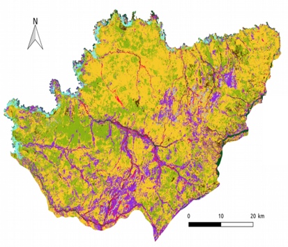

Assistant Professor, Remote Sensing of Terrestrial Surfaces.
Coordinator of the Master 2 Geographical Information, Spatial Analysis and Remote Sensing
Maître de Conférences HDR en télédétection des surfaces terrestres
Responsable du Master 2 Information Géographique, Analyse Spatiale et Télédétection